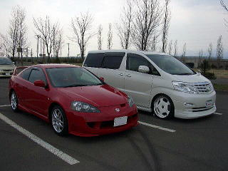

| お気に入りの写真です。 ハイルーフは迫力があります。 |
手前の隊長車は２０インチをいれています。 |
| CARP本拠地の広島にいて 同じエアロを装着してるzeekさんです。このアルミ大きくていい感じですね。外国製らしいです。 | ワークの２０インチメッキを装着しているシンさんです。ホワイト一色にペイントしているのがポイントですね。お金かかっています。 |
| 全長、全高が一番大きいイタ号です。バンパーに座れます。このボンスポいいですね。夜になると左のようなネオンカーとなります。 | これが一番イタさんらしい画像です。 フラッシュが写っていませんかね。実物を見るともっと派手です。 |
| みんからでお友達のけんさんのＣＵＢＥです。一度購入も考えた車です。なかなか良い車でした。アルミが似合っていますね。 | 広島からCOLTZさんです。広島らしい背景ありがとうございます。シンプル系でセンスの良いコルトですね。 |
| 赤コルト限定、ＣＵＬＢ ＣＯＬＴ赤組の管理人ｕｍｅさんの車です。あえてエアロレスにして極低空仕様にしています。 | CULB COLTメンバーのかわはらさんの白コルトです。ホイルはRAYSのSebring ITC Sport DMCブラックアウト 17×7JJ OFFSET38、タイヤは私のと同じGOODYEAR EAGLE LS2000 205/40-17です。 ｕｍｅさん同様エアロレス低車高狙いです。 |
| グラＱさんのグランビアです。グリル交換とアイラインをつけており、精悍な顔つきになっています | はまさんのグランビアです。エアロがすごく綺麗にまとまっています。私の目標としたい車の一つです。 |
| 坪ちゃんのグランドハイエースです。タイヤハウスの隙間があまりないのでかっこよく見えます。また、エアロもシンプルで大人の車に仕上がっています。 | ひろさんのグランドハーエースです。このホイル欲しかったんですが、高くて買えませんでした。オーディオに凝っています。 |
| ひろさんのヘッドユニットのセッティングです。 | サードシートにアンプ類を設置しています。 |
| 一番後ろにウーハ２発を設置しています。内装と良く合った色でボックスを作成しており高級感抜群です。 | |
| ひっささんのユーロラインです。私と同じアルミですが、９．５Jとかなり太いです。サイズは、
フロント19-9J+19 リア19-9.5J+25だそうです。 このバンパーは迫力ありますね。 |
個人的にユーロラインDHSUVは好きです。前期グランビアにも良く似合っていると思います。 |
 |
|
| kojiさんのアルファードです。白のディッシュが綺麗ですね。 | 凄く低く見えます。 |
|  | |
| ホイルのアップです。２０インチのロディオは上質ですね。 | makiさんのインテグラです。無限のエアロが良かったです。おろしたての新車でした。 |
| グランビア後期の２台です。 | ミーティング時の集合写真です。 |
| てらさんのエアロ修理中画像です。エアロを装着したら迫力画像を送ってください。ホイルは２０インチのワークです。（BEFORE) | てらさんのフルエアロ画像を入手しました。左の写真と比べかなり低くなっていい感じにっています。エアロ壊さないよう気をつけてください。次はオーディオの写真お待ちしています。 |
| 初登場の i です。三菱自動車の i のワンメイククラブＣＵＬＢi umeさんの愛車です。綺麗な写真ですね。改造したらまた写真ください。 | ２００７．５．４に実施したオフ会のひとコマです。グランドハイエースの他にアルファード、ハイエースが集まりました。楽しかったです。 |
| はまさんのグランビア第２弾です。さてどこが変わったでしょうか。 | ２０インチのアルミでしたＷＯＲＫ ＬＳ２０７ ＳＵＶ ９ＪＪ＋１２（Ａディスク）です。センターキャップはブラッディーレッドですね。４本ともＡディスクとすることでローテ可能としています。きまってますね。 |
| 地元のお友達bitz_bitzさんと撮影です。ダウンサスと白コルトのホイルを移植しての撮影です。 | ヴィッツに１７インチ入れるとかなり大きく見えますね。 |
| この日ヴィッツは水垢取りとクラスコートしたので、すごくピカピカでした。 | １６インチだとあまり大きく見えませんね。 |
| ＲＳ−Ｒでも結構落ちましたね。 | 地元のＶＲ乗りのお友達です。 |
| ボンネットはＦＲＰです。 | 痛車！ |
 |
|
| 自分の車がノーマルに見えます。 | こちらも地元のお友達です。 |
| 綺麗にまとめられています。 | 速そうですね。 |
| リアがまたいい感じ。 | インタークーラ大きいです。 |
| 娘の車 | エンブレムを白に交換しています。 |
| フィット３台（その１） | フィット３台（その２） |
 |
|
| ムーブ、エイト、ＶＲ | 娘の車と |
| 娘の車と | 娘の車と |
| 娘の車と | |
| 娘の車、足回り変更 | 娘の車、足回り変更 |
| 娘の車、足回り変更 | コペン集合 |
| コペン集合 | マーベリック装着 |